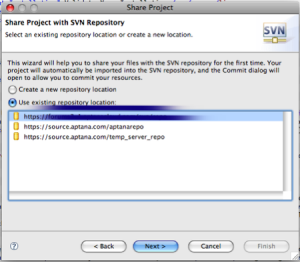
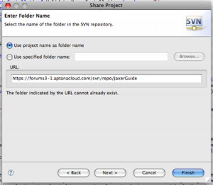

You can share an Aptana project by adding your project to a source control system or other repository, using one of the source control plugins available in Aptana Studio or through the Eclipse plugin repository.
- In the Project View, right-click the project folder that you want to share
- From the context menu, select Team > Share Project... to launch the Share Project wizard
- If you have more than one source control plugin installed, choose which one to use for this project on the first wizard tab
- If the project has any Subversion metadata folders or files, the next wizard tab will ask if you want to have them deleted by Subclipse
- The next tab asks if you want to connect the project to a repository already configured in Studio or to a new respository
- If you choose to use a new repository the next tab prompts for the repository URL
- For both new or existing repository connections, the next tab allows you to enter the folder name or to use the project name as folder name
- The last tab is for entering a commit comment, which can use a comment template you set up in Preferences
- Click the Finish button to complete the connection
Aptana makes your project accessible to the plug-in that you selected, with functions available to your project through the Team menu.
  Choose Repository
Choose Repository
{kind=link}
 Choose Folder
{kind=link}